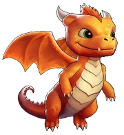
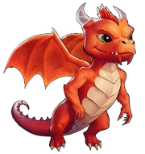
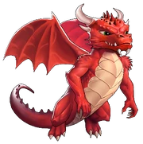
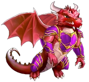

Vermilion is a dragon and one of the guardians in the game. Vermilion unlocks at the start of the game. He can attack 10 times per second and will hit one enemy at a time. He provides you with the raining gold aura.
Earth, Water, Wind and Fire. The elements eternal. Every being and every thing in the universe is made of them. The existence of each one is defined by the other. Fire, for instance, is born of Earth and destroyed by Water. Together, the elements create life. The first of the living creatures that tore itself into existence were beings being born of Fire, always the most volatile of the elements. These beings, the guardians of Fire's secrets and powers, were the Dragons. Colossal flying beasts, it is said that ancient Dragons could be heard flying from across continents, each blast of their wings stronger than a hurricane. Even the roars of their young shake the hearts of great warriors, and whether they appear to you as good or evil depends on the virtue of your soul. Throughout history, some have called them monsters, others gods; no matter how they were seen, these legendary creatures always paid little mind to the opinions of mortals. They might disappear for centuries and reappear suddenly, to shake the world's core. Some even believe that they exist only as a myth. That, however, is the belief of fools. Their marks are everywhere - for those who know how to look. To Dragons, their birth is the Oath of Fire: to protect the elemental Fire for eternity. As long as there are Dragons, there will be Fire.
Young Dragon
A Dragon's birth is rare, but it begins with a giant eye looking at the world through the crack of their egg. Immediately they wonder why they have awoken from the sleep before existence. As breath fills their lungs and sparks into flame, their instinct tells them that they are more than alive, that their purpose is a great one. As they burn through shell that protected them for centuries and they first take flight, they begin to understand that they are destined to see the world from above - that they can send to the ground the gift - or curse - of fire. Vermilion, the first dragon hatchling in generations, has chosen to use his fire for good. He saw the fire of justice that burns in your heart and has decided that you will light the flame that clears the world together. It is up to you to help this Young Dragon grow and in return have a powerful ally in battle.

Topaz Dragon
A Topaz Dragon may still be far from its final form, but it is by no means a hatchling. It has shed its softer scales for harder, armoured ones and its growing lungs make stronger fire. Although his horns are still small, Vermilion's experience by your side and his experience fighting alongside you have taught him much - a Topaz Dragon is not just a bigger Young Dragon, but one that is confident in its fire-breath and proficient in combat. Vermilion, like others of his age, has come to love the feeling of burning away the evil that stains this realm, and trains until exhaustion.

Fire Dragon
A man who has never felt his body burn only needs to gaze upon a Fire Dragon. A rare sight in Alandria, Fire Dragons spend most of their time in deep slumber until they are needed. These are truly the Dragons that have the potential to protect the Oath of Fire. Only the Ancient Fire Priests of Nam'arth, trained in the dead languages of Alandria, know that a Fire Dragon is simply a Topaz Dragon that has survived its burning teenage years - the younglings can burn when they let their flame burn too bright. Thus, Fire Dragons are usually perceived as evil even if they are not - not only because of their deeper red colour, gigantic wings and powerful horns, but by their personality: these are Dragons that have learned the power of responsibility and restraint, and hesitate to help in the affairs of mortals. This is the case for Vermilion as well. Only your team, bound in the fight against the Darkness, can understand his true struggle as an elemental protector. When he is in combat however, Vermilion will unleash his full power, melting the very steel of his enemy's armour and weapons to protect his allies. He knows that his power is great, but that it can be greater; he has learned that the Light is the purest form of Fire and he will do anything to protect it.

Ruby Dragon
A Ruby Dragons is like a Fire Dragon, but bigger, stronger and wiser. Its colour becomes a deep red, lest its enemies forget that they fight against the avatar of Fire. This is a Dragon that could almost match the first Dragons born of the elements - even their scales grow spikes hot to the touch, a warning to all that you cannot touch nor tame fire. Vermilion has evolved into a Ruby Dragon because of your support and his glorious fight the evil alongside you. He knows that his alliance with you is a bond of honour and potential, a climb to greatness hand-in-hand with a brother. It is at this stage that Vermillion can make the final choice to ascend to his final form, more powerful than even the first Dragons.

Ancient Battle Dragon
The ultimate form of Dragon is one that has mastered Fire and joined the realm of mortals. Most Dragons cannot even imagine wearing armour built by soft, small two-legged creatures, much less trusting it to protect them in battle. Vermilion's destiny to become an Ancient Battle Dragon was completed when he gifted his flame to you, so your army could forge for him plates of legendary Dragonfire Steel. The fire within him, now burning with the strength of the first elemental flame, cannot burn brighter; he is the ultimate Dragon, armored and protected from every attack while his power outmatches even the fiercest enemies. Vermilion will always stay by your side, as your brother. You will never leave the Light and he will always protect his Fire. Together, you are unstoppable.
{kind=link}
{kind=link}
{kind=link}
{kind=link}
{kind=link}
{kind=link}
{kind=link}
{kind=link}
{kind=link}
{kind=link}